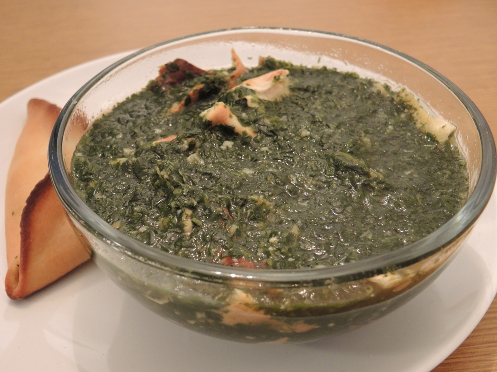

MOLOKHIA

Molokhia is a type of leafy plant called Corchorus
Molokhia started from Egypt and then spread to the rest of the Middle East, North Africa and East Mediterranean regions. It can be found in different forms from fresh leaves, dried or frozen variety.
Ingredients
- Cooking liquid
- Frozen Molokhia
- Dry coriander
- Garlic
- Ghee
- Bullion cube
- Tomato sauce
- Baking soda
Recipe instructions
- In a deep pot over medium-high heat melt ghee.
- Sauté garlic for 15-30 seconds.
- Until lightly golden and fragrant as shown in picture 3.
- Add coriander and keep stirring for another 30 seconds.
- The coriander will give its fragrance and turn a little more dark brown.
- Pour in some of the broth keeping the rest after we check consistency at the end.
- Sprinkle the bouillon cube. Stir until it is dissolved.
- Add the baking soda if you chose to, notice that the broth will foam.
- Add the Molokhia, and turn down the heat to medium low, keep stirring every now and then.
- Molokhia will slowly melt in the broth. Wait until it has completely melted.
- Pour in the tomato sauce and stir well.
- Check consistency: if it is too thick for your liking add more broth.
- Check the seasoning and sweetness: if you need salt or more tomato sauce.
- Serve with rice and pita bread.
Return to main page